“Clients should not be forced to depend on methods they do not use” states the:
- Interface Segregation Principle
- Dependency Inversion Principle
- Open-Closed Principle
- Liskov Substitution Principle
Show answer
A. Interface Segregation Principle
This lecture finishes SOLID. The Interface Segregation Principle says no class should be forced to depend on methods it does not use, so one bloated interface is split into small, role-specific ones. The Dependency Inversion Principle says high-level modules and low-level details should both depend on abstractions, so a Manager talks to an IWorker interface instead of a concrete Worker. It then shows how a component’s internal behaviour is modelled (sequence diagrams, next to class diagrams for structure), and closes with sixteen rules of design and four common design mistakes.
Many client-specific interfaces are better than one general-purpose interface. Classes shouldn’t implement methods they can’t honour.
Depend on abstractions, not concretions: high-level policy and low-level detail both point at an interface.
A component’s internal structure is a class diagram; its internal behaviour is a sequence diagram.
What before how, external before internal, keep it simple, depend on abstractions, dependencies toward stability.
SRP and OCP from Lecture 2 have appeared on Final 252; ISP and DIP have not yet, so the questions here are predictions. Expect “which principle is violated?” scenarios: a class forced to implement a method it can’t support (ISP), or a high-level class that holds a concrete low-level class (DIP).
Every original slide is shown unchanged. Yellow marks on a slide point to a numbered note: hover or tap a mark to jump to its note, and hover a note to see its marks. Questions tagged Past exam appeared on a real paper; Prediction questions are likely angles, not confirmed.
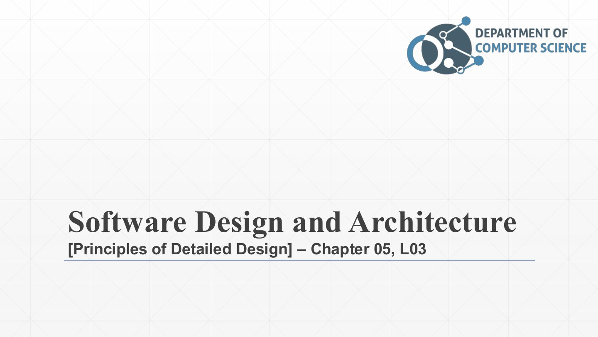
Third detailed-design lecture: the last two SOLID principles (I and D), then how to model a component’s behaviour and general rules of good design.
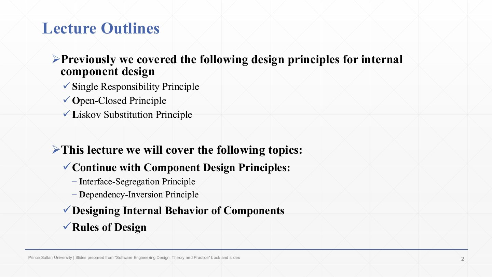
Already covered in Lecture 2: SRP, OCP and LSP.
This lecture: the Interface Segregation Principle and the Dependency Inversion Principle, completing SOLID.
Then designing internal behaviour and the rules of design.
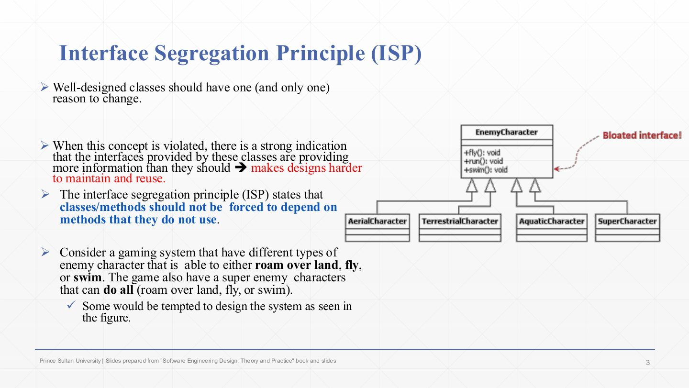
The starting point is SRP: a well-designed class has one reason to change.
When that is violated, the interfaces the class offers usually provide more than they should, which makes designs harder to maintain and reuse.
The Interface Segregation Principle (ISP): classes (or methods) should not be forced to depend on methods they do not use.
The example: a game with enemy characters that roam over land, fly or swim, plus a super enemy that can do all three.
The tempting design: one EnemyCharacter with fly(), run() and swim(), inherited by Aerial, Terrestrial, Aquatic and SuperCharacter. The slide labels it a bloated interface.
“Clients should not be forced to depend on methods they do not use” states the:
A. Interface Segregation Principle
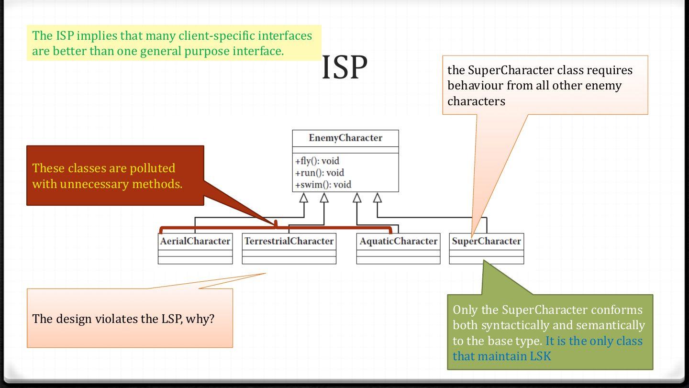
The rule of thumb: many client-specific interfaces are better than one general-purpose interface.
Aerial, Terrestrial and Aquatic characters are polluted with methods they can’t perform: an aerial character inherits run() and swim(), a terrestrial one fly().
The design also violates LSP (Lecture 2): code holding an EnemyCharacter may call fly(), but a TerrestrialCharacter put in its place can’t fly, so it can’t safely substitute for its parent.
Only SuperCharacter conforms to the base type syntactically and semantically. It is the only class that really needs (and honours) all three methods, so it is the only one that satisfies LSP.
In the enemy-character design where every character extends EnemyCharacter with fly(), run() and swim(), which principles are violated and why?
ISP: Aerial, Terrestrial and Aquatic characters are forced to depend on methods they don’t use. LSP: a TerrestrialCharacter cannot replace an EnemyCharacter where code expects fly(), so subclasses don’t behave like their parent. Only SuperCharacter conforms.
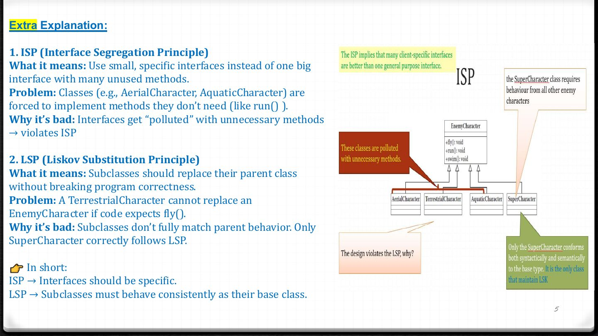
ISP: use small, specific interfaces instead of one big interface full of unused methods. Problem here: AerialCharacter and AquaticCharacter are forced to implement run(); the interface is polluted.
LSP: a subclass must replace its parent without breaking correctness. Problem here: a TerrestrialCharacter can’t replace an EnemyCharacter when the code expects fly().
In short: ISP → interfaces should be specific; LSP → subclasses must behave consistently with their base class. Fixing the interfaces (next slide) fixes both.
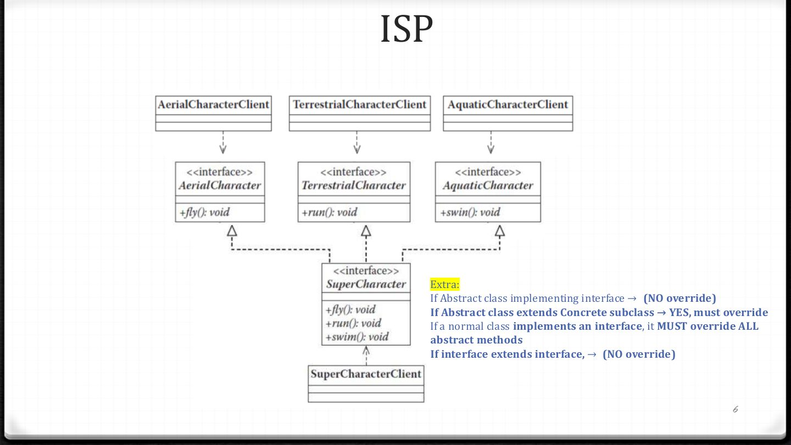
The ISP fix: three small interfaces, «interface» AerialCharacter (fly()), TerrestrialCharacter (run()) and AquaticCharacter (swim()). Each client class (dashed realization arrows) implements only the one it can honour.
«interface» SuperCharacter declares all three operations and is implemented by SuperCharacterClient. In the slide’s version the three small interfaces extend SuperCharacter (hollow triangles pointing down to it); conceptually it is the combination of the three capabilities.
The Extra box: Java rules about overriding when types are combined:
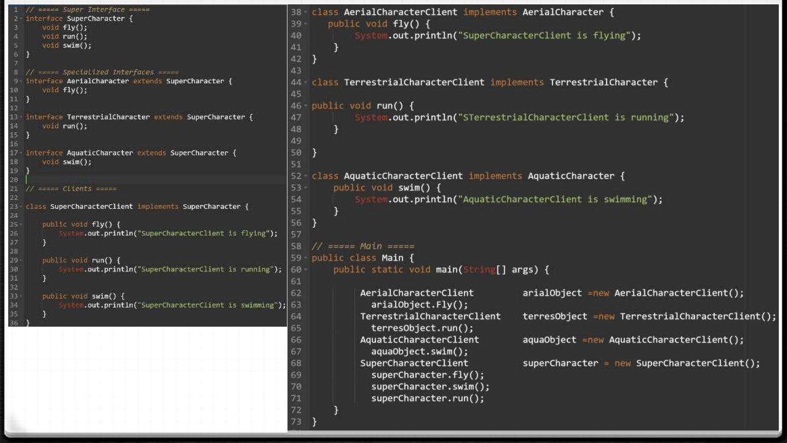
The code, top to bottom:
| Code | What it does |
|---|---|
interface SuperCharacter { void fly(); void run(); void swim(); } | The full contract: all three capabilities. |
interface AerialCharacter extends SuperCharacter { void fly(); } | A specialised interface that names the capability its clients use. (Because it extends SuperCharacter, a class implementing it must still provide all three methods; to apply ISP strictly, the small interfaces should not extend the big one.) |
interface TerrestrialCharacter extends SuperCharacter { void run(); } | The same for running. |
interface AquaticCharacter extends SuperCharacter { void swim(); } | The same for swimming. |
class SuperCharacterClient implements SuperCharacter { fly(){…} run(){…} swim(){…} } | The only class that really supports all three; each prints what it is doing. |
class AerialCharacterClient implements AerialCharacter { public void fly(){ … "is flying" } } | Implements only fly(). As printed it would not compile, because the inherited run() and swim() are missing; with stand-alone small interfaces it would. |
class TerrestrialCharacterClient implements TerrestrialCharacter { run() } | Runs only. |
class AquaticCharacterClient implements AquaticCharacter { swim() } | Swims only. |
AerialCharacterClient arialObject = new AerialCharacterClient(); arialObject.fly(); | In main, each object is used through the capability it supports. |
SuperCharacterClient superCharacter = new SuperCharacterClient(); superCharacter.fly(); …swim(); …run(); | The super character can be asked for all three. |
The intent: a reference of a narrow type can only request what that character can do, so unsupported calls become impossible. Exam answers should draw the small interfaces as independent, each implemented by the classes that need it.
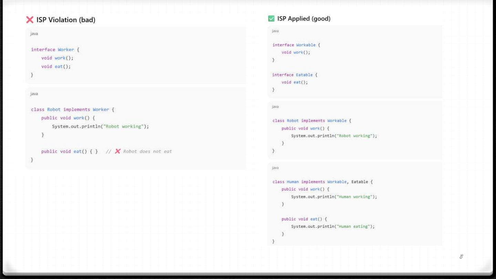
Violation: one Worker interface with work() and eat().
| Code | What it does |
|---|---|
interface Worker { void work(); void eat(); } | One fat interface for two unrelated capabilities. |
class Robot implements Worker { | A robot can work but cannot eat… |
public void work() { System.out.println("Robot working"); } | …so work() is meaningful, |
public void eat() { } // Robot does not eat | but eat() is forced on it and left empty: a lie in the type. |
Applied: split the interface by capability.
| Code | What it does |
|---|---|
interface Workable { void work(); } | The working capability. |
interface Eatable { void eat(); } | The eating capability. |
class Robot implements Workable { work() } | The robot implements only what it can do. |
class Human implements Workable, Eatable { work() … eat() } | A human implements both: a class may implement several small interfaces. |
A Robot class implements a Worker interface that declares work() and eat(), and leaves eat() empty. Which principle is violated, and how do you fix it?
The Interface Segregation Principle: Robot is forced to depend on eat(), which it does not use. Split Worker into Workable (work()) and Eatable (eat()); Robot implements Workable only, Human implements both.
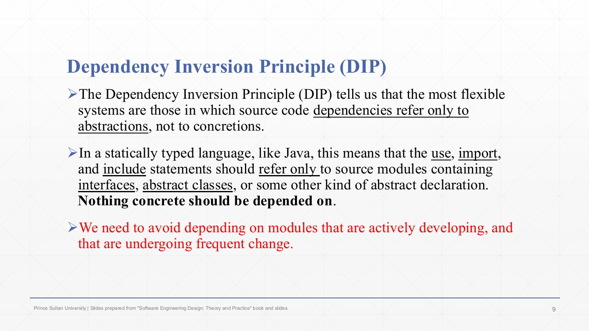
The Dependency Inversion Principle (DIP): the most flexible systems are those whose source-code dependencies refer only to abstractions, not to concretions.
In a statically typed language like Java, that means use, import and include statements should name only interfaces, abstract classes or other abstract declarations.
Nothing concrete should be depended on: concrete classes change often, abstractions rarely.
In particular, avoid depending on modules that are actively being developed and change frequently: every change there would ripple into your code.
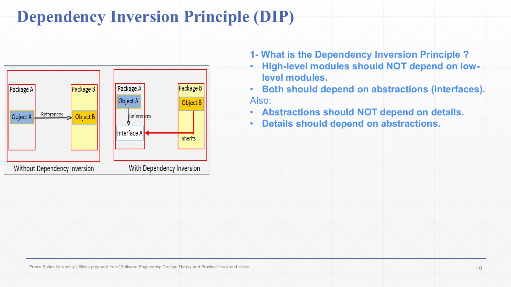
The two rules. (1) High-level modules (policy, e.g. a Manager) must not depend on low-level modules (details, e.g. a Worker). Both depend on an abstraction (an interface).
(2) Abstractions must not depend on details; details depend on abstractions.
The diagram: without inversion, Object A in Package A references Object B in Package B directly. With inversion, Object A references Interface A, and Object B implements (inherits) Interface A. The arrow from B now points toward the abstraction, the opposite (“inverted”) direction of the original dependency.
According to DIP, a high-level module should depend on:
A. Abstractions (interfaces)
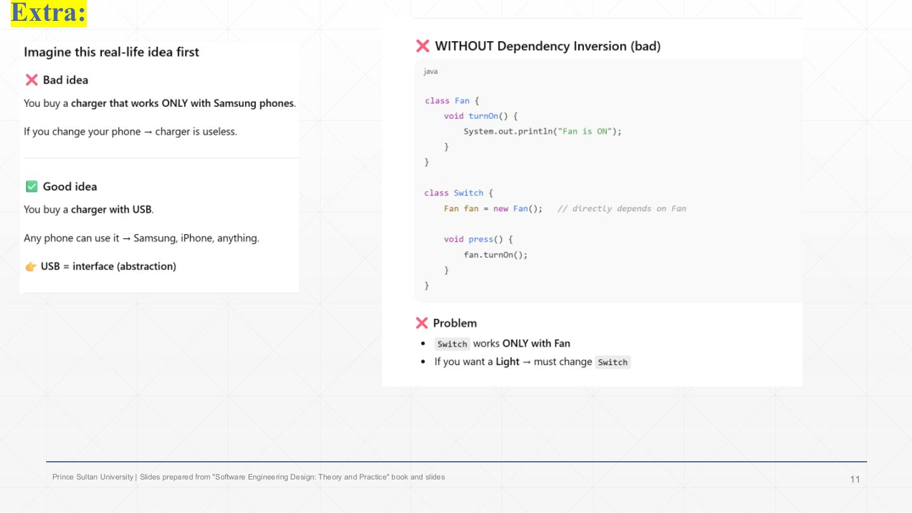
The real-life idea: a charger that only works with Samsung phones is useless when you change phones (bad). A USB charger works with any phone (good): USB is the interface, the abstraction.
The same mistake in code, the charger that only fits one phone:
Switch without dependency inversion:
| Code | What it does |
|---|---|
class Fan { void turnOn() { System.out.println("Fan is ON"); } } | A concrete low-level device. |
class Switch { | The high-level module. |
Fan fan = new Fan(); // directly depends on Fan | The switch creates and holds a concrete Fan. |
void press() { fan.turnOn(); } } | Pressing can only ever turn on a fan. |
The problem: Switch works only with Fan. To control a Light you must change Switch.
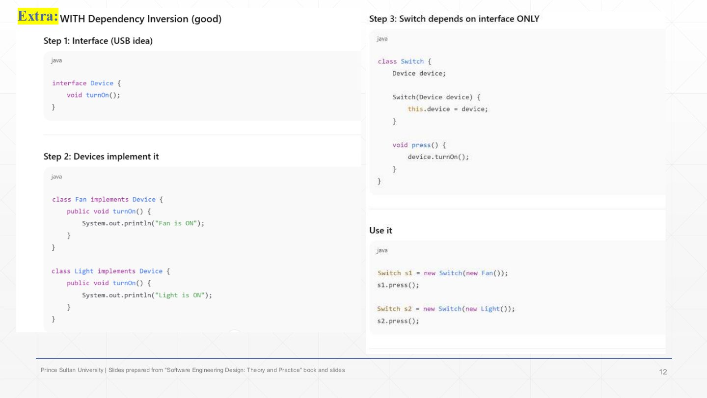
The fix in three steps:
| Code | What it does |
|---|---|
interface Device { void turnOn(); } | Step 1: the abstraction (the “USB port”). |
class Fan implements Device { public void turnOn() { …"Fan is ON"… } } | Step 2: the details implement the abstraction. |
class Light implements Device { public void turnOn() { …"Light is ON"… } } | A second device, added without touching Switch. |
class Switch { Device device; Switch(Device device) { this.device = device; } void press() { device.turnOn(); } } | Step 3: Switch knows only Device; the concrete device is passed in through the constructor. |
Switch s1 = new Switch(new Fan()); s1.press(); | Wiring a fan: prints “Fan is ON”. |
Switch s2 = new Switch(new Light()); s2.press(); | Wiring a light: prints “Light is ON”. Same Switch class. |
Passing the dependency in from outside (instead of new Fan() inside) is called dependency injection; it is the usual way to apply DIP.
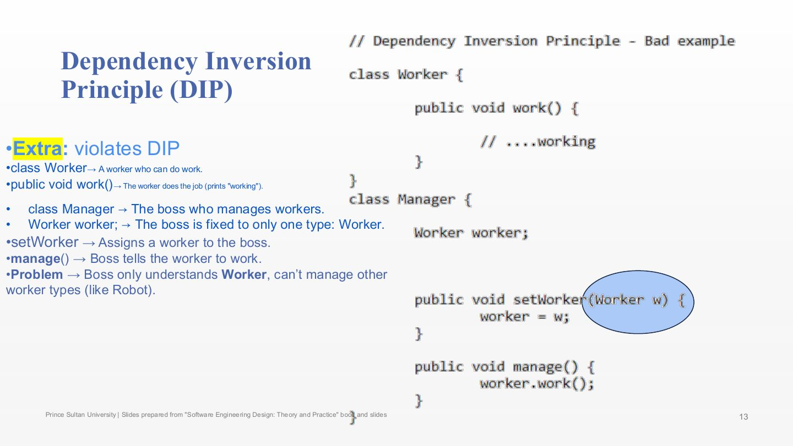
The textbook bad example, line by line:
| Code | What it does |
|---|---|
class Worker { public void work() { // ....working } } | A concrete worker. |
class Manager { | The high-level module (the boss). |
Worker worker; | The manager is fixed to one concrete type. |
public void setWorker(Worker w) { worker = w; } | It can only be given a Worker (the circled parameter type). |
public void manage() { worker.work(); } } | It tells that worker to work. |
Manager is the high-level module and depends directly on the low-level Worker.
Problem: the boss only understands Worker. A Robot or an Intern can’t be managed without changing Manager, and tests can’t substitute a fake worker.
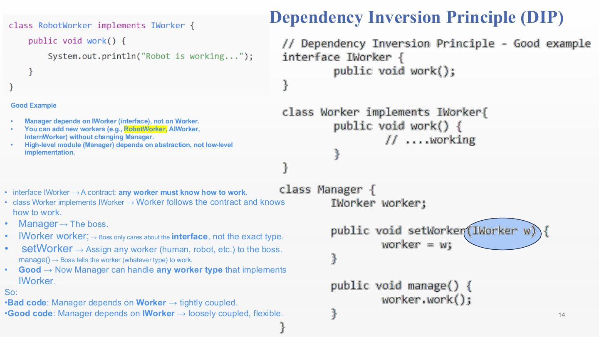
The good example:
| Code | What it does |
|---|---|
interface IWorker { public void work(); } | The contract: any worker must know how to work. |
class Worker implements IWorker { public void work() { // ....working } } | The original worker now follows the contract. |
class RobotWorker implements IWorker { public void work() { …"Robot is working..."… } } | A new kind of worker, added without touching Manager. |
Manager now depends only on the abstraction:
| Code | What it does |
|---|---|
class Manager { IWorker worker; | The boss only cares about the interface, not the exact type. |
public void setWorker(IWorker w) { worker = w; } | Any worker (human, robot, AI, intern) can be assigned. |
public void manage() { worker.work(); } } | At run time the actual object’s work() runs. |
Bad code: Manager → Worker (tightly coupled). Good code: Manager → IWorker ← Worker, RobotWorker (loosely coupled and flexible). New workers such as RobotWorker, AIWorker or InternWorker need no change to Manager, which also makes Manager open for extension (OCP).
A Manager class holds a field of the concrete type Worker and calls worker.work(). Which principle does this violate? Draw or describe the fix.
The Dependency Inversion Principle: the high-level Manager depends on the concrete low-level Worker. Fix: introduce interface IWorker { work(); }; Worker, RobotWorker, etc. implement it; Manager holds an IWorker and receives it through setWorker(IWorker). In UML: Manager → IWorker (dependency/association), Worker and RobotWorker ⇢ IWorker (realization).
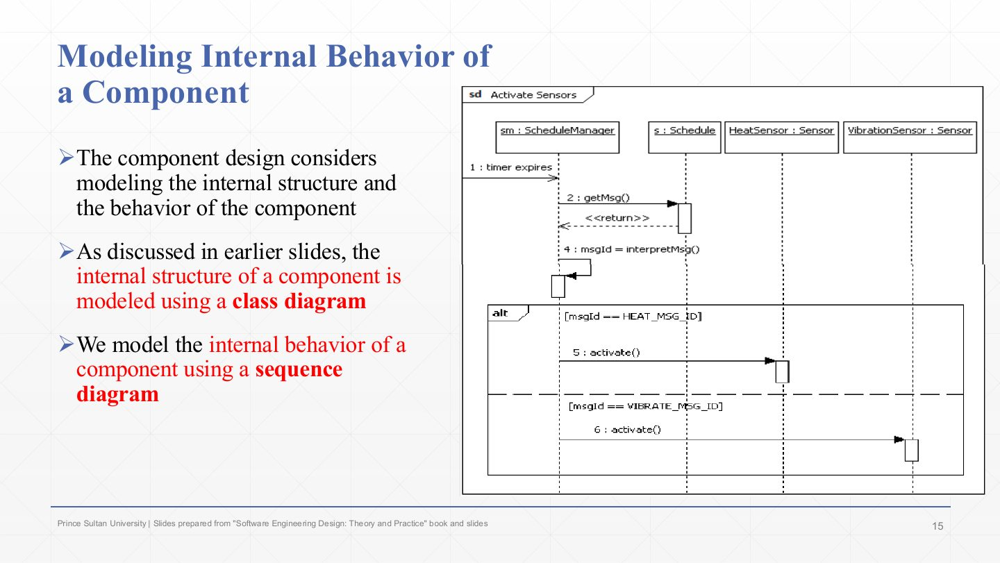
Component design models both the internal structure and the behaviour of a component.
The internal structure is modelled with a class diagram (as in Lecture 2).
The internal behaviour is modelled with a sequence diagram.
Reading the “Activate Sensors” example:
sm).s : Schedule and interprets it (a self-call).msgId == HEAT_MSG_ID it sends 5: activate() to the HeatSensor; if msgId == VIBRATE_MSG_ID it sends 6: activate() to the VibrationSensor. Only one branch runs.Which UML diagrams model a component’s internal structure and its internal behaviour?
A. Class diagram for structure, sequence diagram for behaviour
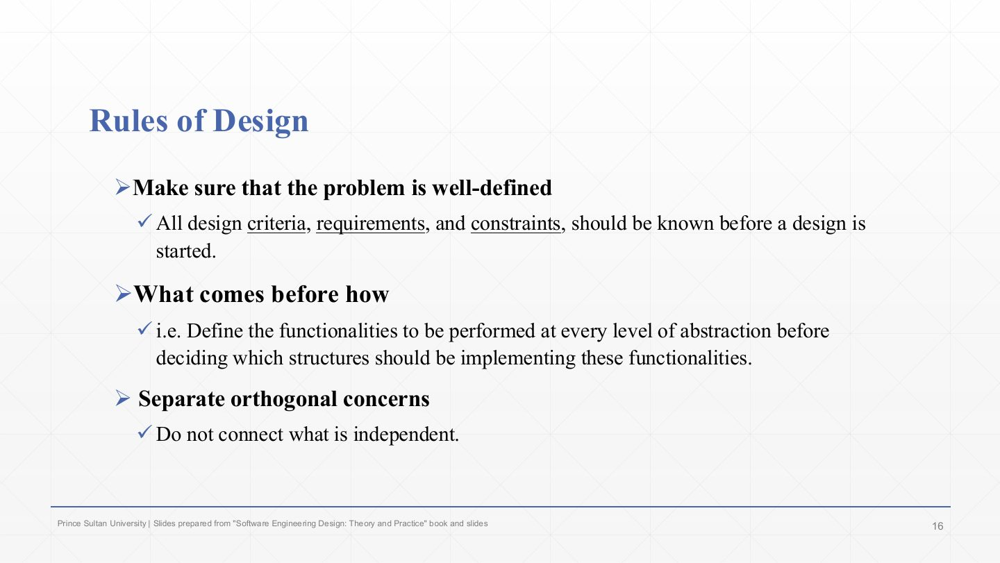
Make sure the problem is well defined: know all design criteria, requirements and constraints before starting the design.
What comes before how: at every level of abstraction, define the functions to be performed before choosing the structures that implement them.
Separate orthogonal concerns: don’t connect what is independent (orthogonal = unrelated, changing for different reasons).
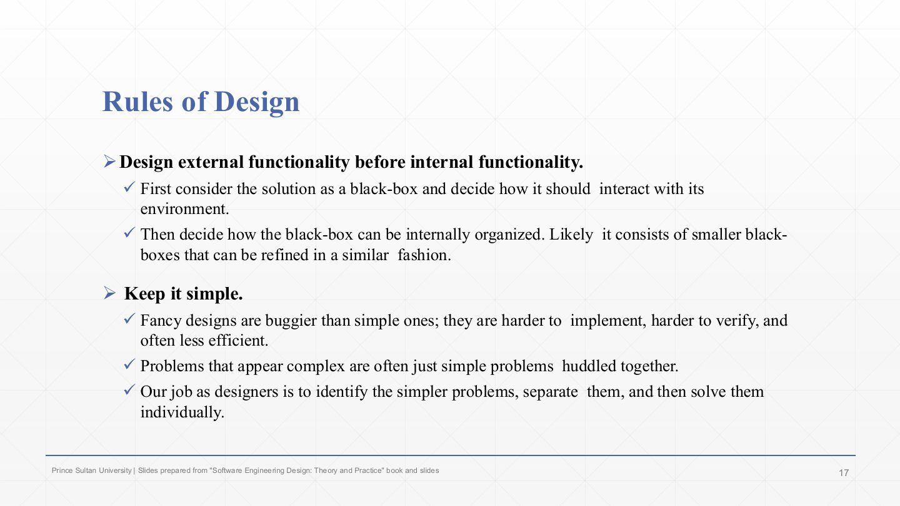
External before internal: first treat the solution as a black box and decide how it interacts with its environment; then decide how the box is organised inside, usually as smaller black boxes refined the same way.
Keep it simple: fancy designs are buggier, harder to implement and verify, and often slower. Problems that look complex are often simple problems huddled together; the designer’s job is to separate them and solve each one.
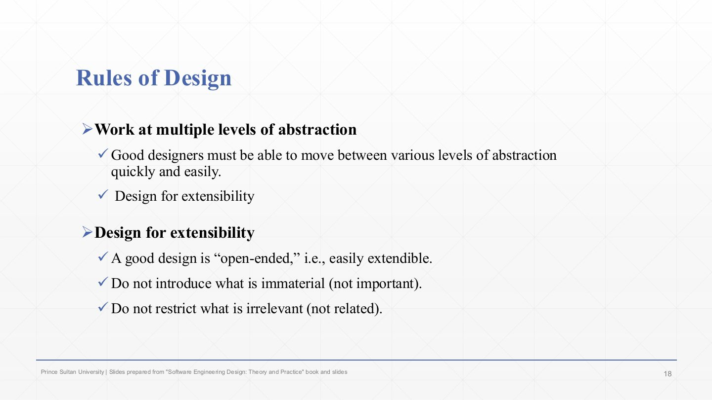
Work at multiple levels of abstraction: good designers move quickly between the big picture and the details.
Design for extensibility: a good design is “open-ended”, easy to extend. Don’t introduce what is immaterial (unimportant) and don’t restrict what is irrelevant (unrelated): both make later extension harder.
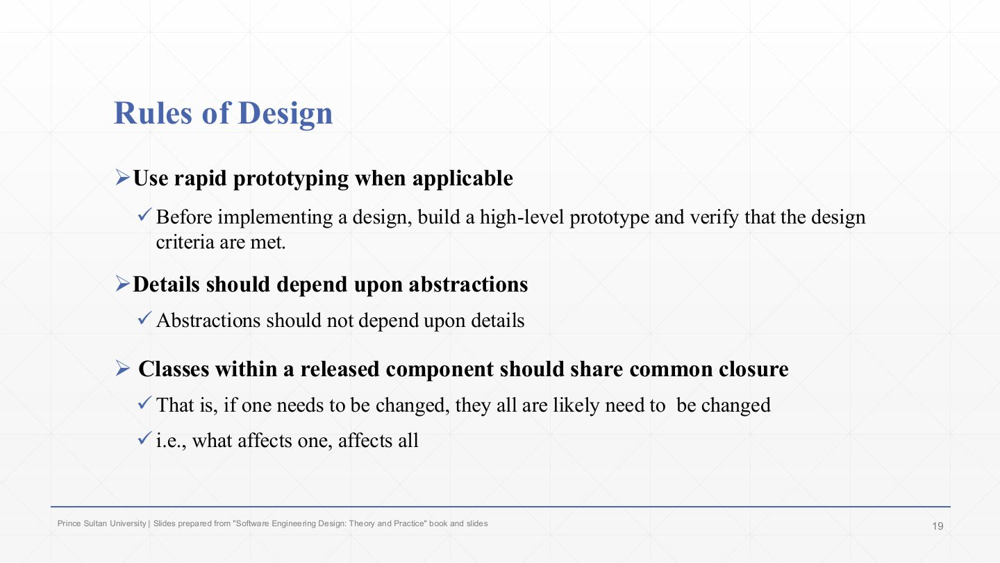
Rapid prototyping: before implementing, build a high-level prototype and check that the design criteria are met.
Details depend on abstractions; abstractions don’t depend on details: the DIP stated as a rule of design.
Common closure: classes in a released component should change together; if one needs to change, they all probably do (“what affects one, affects all”). Group classes by the reasons they change.
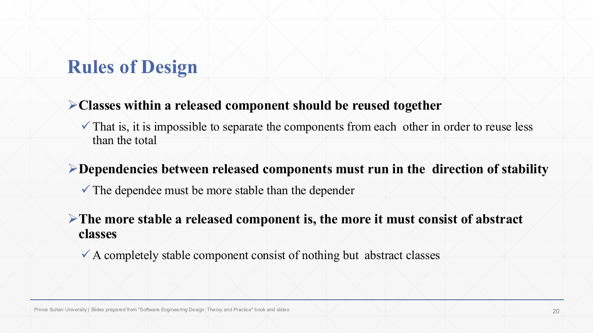
Common reuse: classes in a released component are reused together; you can’t take part of a component.
Stable dependencies: dependencies between components must run in the direction of stability. The component depended on (dependee) must be more stable than the one depending on it.
Stable abstractions: the more stable a component is, the more it should consist of abstract classes; a completely stable component contains nothing but abstractions. That is why interfaces sit at the stable end of DIP diagrams.
State the stable-dependencies rule and explain why stable components should be abstract.
Dependencies must point toward more stable components (the dependee is more stable than the depender). Stable components are hard to change because many others depend on them, so they should consist of abstractions that can be extended without modification.
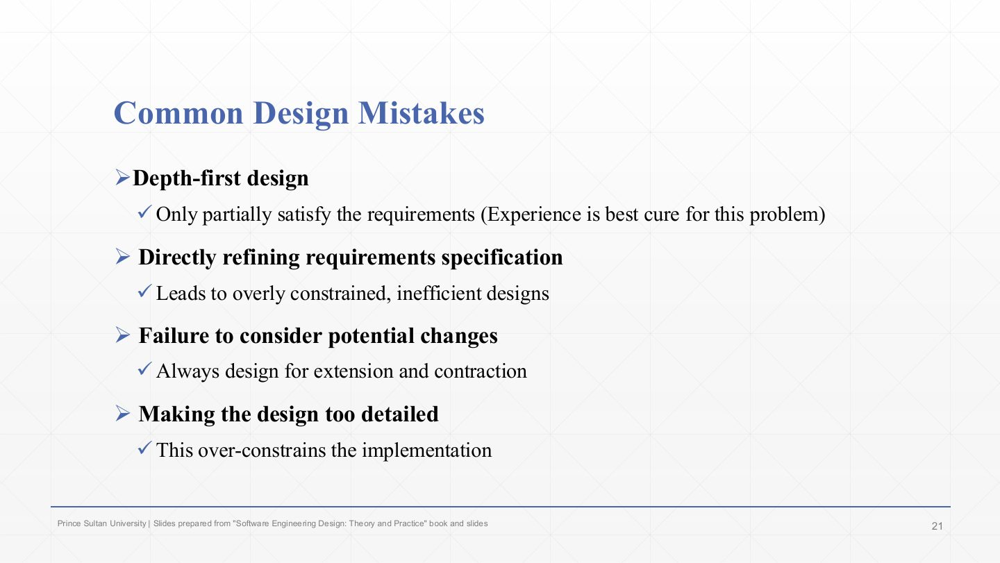
Depth-first design: perfecting one part early and only partially satisfying the requirements overall. Experience is the best cure.
Directly refining the requirements specification into a design: produces overly constrained, inefficient designs, because the structure copies the document instead of the problem.
Failing to consider potential changes: always design for extension and contraction (adding and removing features).
Making the design too detailed: over-constrains the implementation and leaves programmers no sensible choices.
Name two common design mistakes and their consequences.
Any two: depth-first design (only partially satisfies requirements); directly refining the requirements specification (overly constrained, inefficient design); failing to consider potential changes (hard to extend); making the design too detailed (over-constrains the implementation).
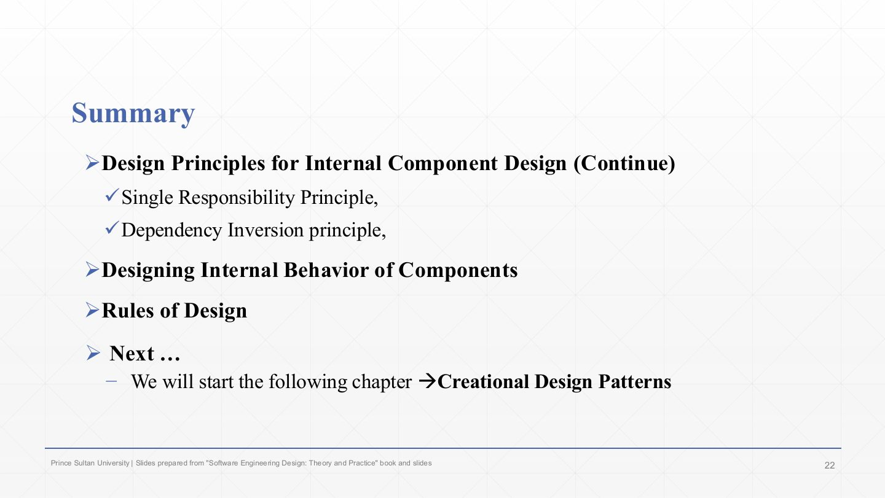
Recap: the internal-component design principles (the slide lists SRP and DIP; this lecture added ISP and DIP to Lecture 2’s SRP, OCP and LSP).
Internal behaviour is modelled with sequence diagrams, and the rules of design guide every decision.
Next chapter: creational design patterns.
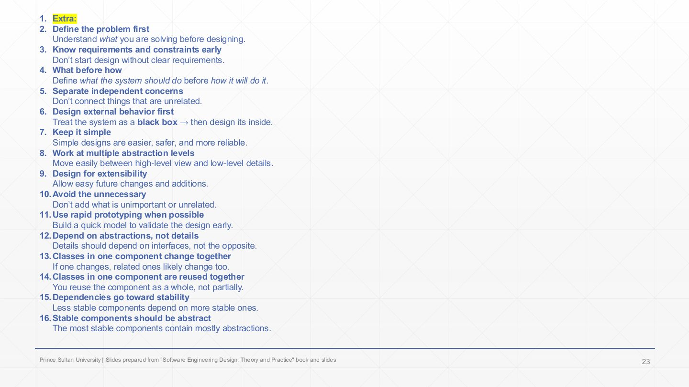
The rules from slides 16–20 in one list. Problem and requirements first; what before how; separate independent concerns; design external behaviour first.
Keep it simple; work at several abstraction levels; design for extensibility; avoid the unnecessary; prototype early.
Depend on abstractions, not details (DIP).
Component rules: classes that change together and are reused together belong in one component; dependencies go toward stability; stable components should be abstract.
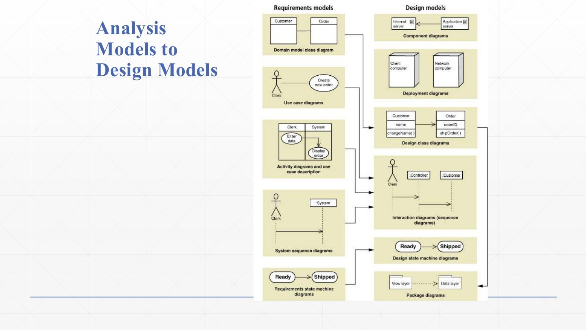
How analysis (requirements) models turn into design models. Left: the analysis models describe the problem.
The domain model class diagram (Customer, Order) becomes the design class diagrams (with attributes and operations such as changeName(), shipOrder()); use case diagrams and activity diagrams feed the component and interaction (sequence) diagrams.
System sequence diagrams become detailed interaction diagrams; requirements state machines (Ready → Shipped) become design state machines; and package diagrams organise the result into layers. Each design model traces back to an analysis model.